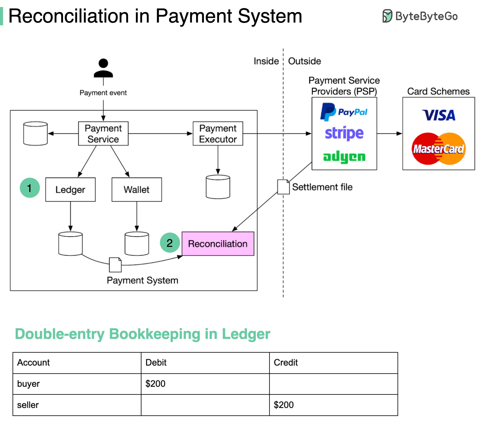

Reconciliation might be the most painful process in a payment system. It is the process of comparing records in different systems to make sure the amounts match each other.
For example, if you pay $200 to buy a watch with Paypal:
The eCommerce website should have a record of the $200 purchase order.
There should be a transaction record of $200 in Paypal (marked with 2 in the diagram).
The Ledger should record a debit of $200 dollars for the buyer, and a credit of $200 for the seller. This is called double-entry bookkeeping (see the table below).
Let’s take a look at some pain points and how we can address them:
When comparing records in different systems, they come in different formats. For example, the timestamp can be “2022/01/01” in one system and “Jan 1, 2022” in another.
We can add a layer to transform different formats into the same format.
We can use big data processing techniques to speed up data comparisons. If we need near real-time reconciliation, a streaming platform such as Flink is used; otherwise, end-of-day batch processing such as Hadoop is enough.
For example, if we choose 00:00:00 as the daily cut-off time, one record is stamped with 23:59:55 in the internal system, but might be stamped 00:00:30 in the external system (Paypal), which is the next day. In this case, we couldn’t find this record in today’s Paypal records. It causes a discrepancy.
We need to categorize this break as a “temporary break” and run it later against the next day’s Paypal records. If we find a match in the next day’s Paypal records, the break is cleared, and no more action is needed.
You may argue that if we have exactly-once semantics in the system, there shouldn’t be any discrepancies. But the truth is, there are so many places that can go wrong. Having a reconciliation system is always necessary. It is like having a safety net to keep you sleeping well at night.